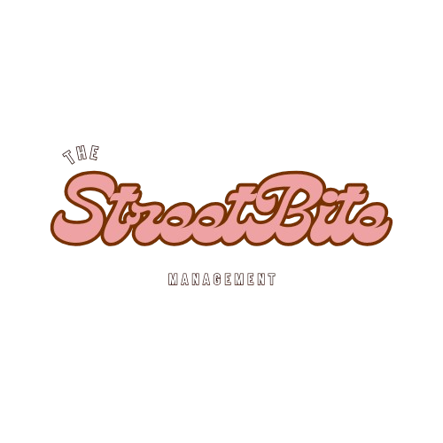

<!doctype html>
<html lang="pt-BR">
  <head>
    <meta charset="UTF-8" />
    <meta name="viewport" content="width=device-width, initial-scale=1.0" />
    <title>StreetBite</title>
    <link rel="stylesheet" href="../Styles/streetBite.css" />
    <link id="pageCSS" rel="stylesheet" href="" />
    <script src="../Scripts/streetBite.js" type="module"></script>
    <link
      rel="shortcut icon"
      href="../Imgs/images/favcon.png"
      type="image/x-icon"
    />
  </head>
  <body>
    <section class="mainSection">
      <aside class="sideBar" aria-label="Barra lateral de navegação">
        
        <div class="buttonsNav" aria-label="Navegação principal">
          <a
            class="navBarButtons"
            id="homeButton"
            href="Iframes/home.html"
            aria-label="Abrir página Início"
          >
            <span class="navIcon homeIcon" aria-hidden="true"></span>Início
          </a>
          <a
            class="navBarButtons"
            id="menuButton"
            href="Iframes/menu.html"
            aria-label="Abrir página Cardápio"
          >
            <span class="navIcon menuIcon" aria-hidden="true"></span>Cardápio
          </a>
          <a
            class="navBarButtons"
            id="ordersButton"
            href="Iframes/requests.html"
            aria-label="Abrir página Pedidos"
          >
            <span class="navIcon orderIcon" aria-hidden="true"></span>Pedidos
          </a>
          <a
            class="navBarButtons"
            id="settingsButton"
            href="Iframes/settings.html"
            aria-label="Abrir página Configurações"
          >
            <span class="navIcon settingsIcon" aria-hidden="true"></span
            >Configurações
          </a>
        </div>
        <button
          class="themeIconButton"
          id="themeToggleSidebarButton"
          type="button"
          aria-label="Ativar modo escuro"
          aria-pressed="false"
          title="Alternar tema"
        >
          <span id="themeToggleIcon" class="themeIconGlyph" aria-hidden="true"
            >☾</span
          >
        </button>
      </aside>
      <div class="contentArea" id="contentArea" aria-live="polite"></div>
    </section>

    <!-- VLibras -->
    <div vw class="enabled">
      <div vw-access-button class="active"></div>
      <div vw-plugin-wrapper>
        <div class="vw-plugin-top-wrapper"></div>
      </div>
    </div>
    <script src="https://vlibras.gov.br/app/vlibras-plugin.js"></script>
    <script>
      new window.VLibras.Widget("https://vlibras.gov.br/app");
    </script>
    <script
      src="https://cdn.jsdelivr.net/npm/sienna-accessibility@latest/dist/sienna-accessibility.umd.js"
      defer
    ></script>
  </body>
</html>
